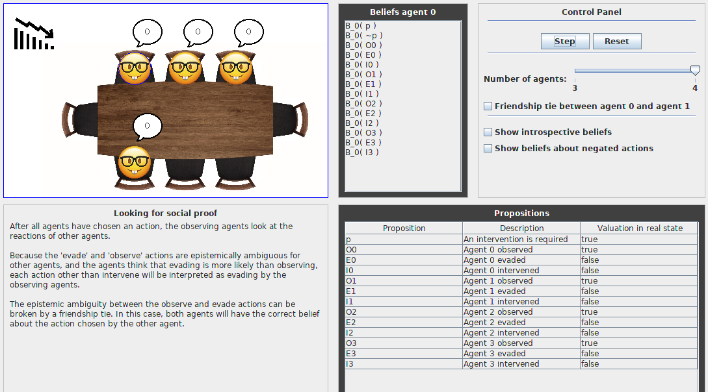

The system

When the simulation is opened there are several things we can see. First in the control panel the system can be started and the system can be reset. Next to this, the user can adjust the number of agents and the beliefs that must be shown. Formal logic information is shown in the Beliefs panel and the Propositions panel. In the information panel a description of the current state can be found. Lastly, in the situation panel, a schematic view of the current situation can be found.
How to use
The system is very intuitive to use, but nevertheless explained in short below.
- Download the .jar application
- Open the .jar file with Java
- Choose number of agents
- Choose whether or not to add friendship ties
- Press start
- For every next step, press step
- Enjoy!
For an in-depth explanation on the workings of the system, please see the
paper.